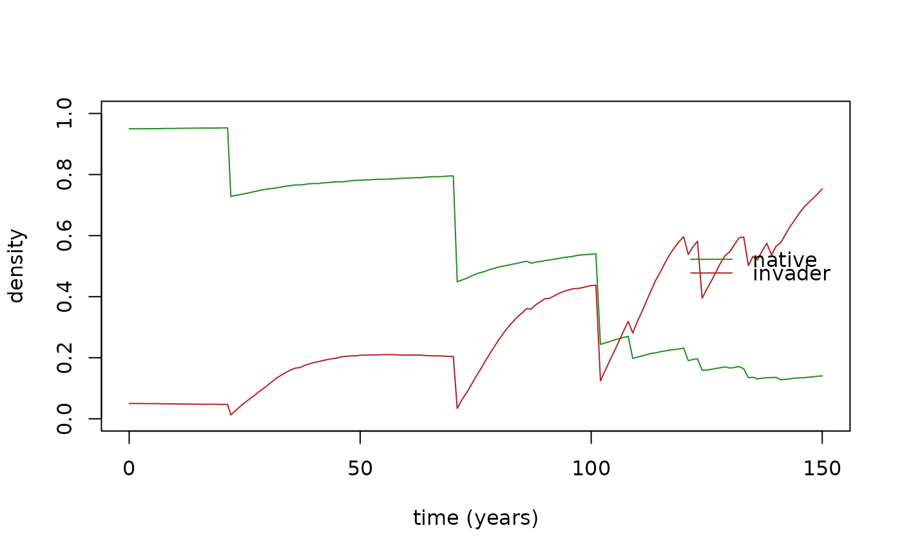
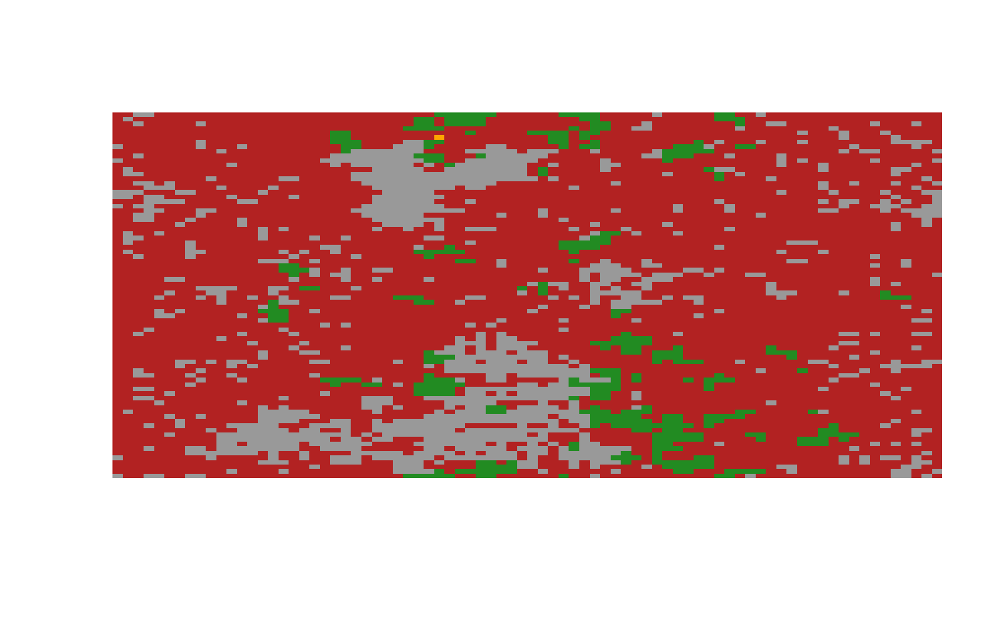

Simulates the lattice continuous-time Markov chain exactly, with the
Gillespie algorithm, on an LxL periodic (or bounded) grid, starting
from an invader landscape generated the same way as
generate_landscape(). See ForestFireR-model for the transition rules
and parameters.
Usage
simulate_spatial(
T,
L = 100,
density2 = 0.1,
p = 1,
xi_nat = 0.5,
xi_inv = 0.6,
eta_nat = 0,
eta_inv = 0.6,
L_01 = 0.03,
L_02 = 0.03,
L_12 = 0.005,
L_21 = 0.01,
L_30 = 1e+06,
Lig_13 = 0,
Lig_23 = 1e-04,
periodic = TRUE,
seed = NULL,
record_dt = -1,
record_grid = FALSE,
capture_fire_snapshots = FALSE,
fire_snapshot_min_gap = 0.001,
engine = c("tree", "linear")
)Arguments
- T
Simulation time horizon (years).
- L
Grid side length (grid has
L*Lsites). Runtime grows with the number of Gillespie events, roughly asL^2 * T; with the default sum-tree engine anL = 200,T = 200run with the baseline rates takes well under a second, so grid size is rarely the binding constraint (parameters that keep a fire burning are costlier than the baseline ones).- density2
Initial invader density.
- p
Spatial heterogeneity of the initial landscape (see
generate_landscape()).- xi_nat, xi_inv
Fire-spread probabilities for native/invader, in
[0, 1)(seexi2lambda()).xi = 0.5is the spread/no-spread threshold (seexi2lambda()'s Details); the defaults here (xi_nat = 0.5,xi_inv = 0.6) put the native species right at that threshold and the invader moderately above it.- eta_nat, eta_inv
Native/invader post-fire regrowth probabilities (see
xi2lambda()). Defaulteta_nat = 0leaves the native species without a post-fire regrowth advantage; defaulteta_inv = 0.6gives the invader a moderate one.- L_01, L_02, L_12, L_21, L_30, Lig_13, Lig_23
Base rate constants; see
default_rates()for the baseline values. Override individual entries to explore parameter space, e.g.L_21 = 0.02.- periodic
Use periodic boundary conditions (default
TRUE).- seed
Integer RNG seed, or
NULLfor a fresh, non-reproducible seed.- record_dt
Trajectory sampling interval, in the same time units as
T.-1(default) records only the final state (fastest, use this for parameter sweeps).0records every single event (dense, memory heavy, only for small/short runs). A positive value samples the trajectory roughly everyrecord_dttime units (use this whenever you need the full time series rather than just the endpoint, e.g.record_dt = T/200for a smooth-looking curve).- record_grid
If
TRUE, also return the initial and final grid snapshots (LxLinteger matrices) – use this whenever you need to inspect or plot the spatial pattern, not just the aggregate densities.- capture_fire_snapshots
If
TRUE, also return every grid snapshot captured while the fire compartment was actively non-empty (n3 > 0), throttled to at most one capture perfire_snapshot_min_gaptime units. Use this to find an illustrative "fire in progress" grid near a target illustration time:record_grid's start/end snapshots essentially never show fire, because the default fire-spread/fire-extinction rates (~1e6/year, hours-scale) resolve any given outbreak in a sliver of simulated time invisible to a snapshot at an arbitrary fixed time – an outbreak has to be searched for explicitly, not hoped for. After the run, pick the returnedfire_snapshot_timesentry closest to your target time and use the matchingfire_snapshot_gridsentry; there is no guarantee one exists near any particular time (ignition is itself a rare Poisson process –lambda^ig = 1e-4/year per invader-occupied site by default), so checklength(fire_snapshot_times)and how close the nearest one actually is before trusting it as illustrative of that moment.- fire_snapshot_min_gap
Minimum simulated-time gap (years) between two fire snapshots; keeps a single outbreak from filling the returned list with near-duplicate frames. Default
0.001(~9 hours) is well under a typical outbreak's total duration but well above the time between individual Gillespie events during one.- engine
Gillespie event-selection method:
"tree"(default) keeps per-site rates in a binary sum tree, O(log N) per event;"linear"is the original cumulative scan over all sites, O(N) per event, kept to reproduce runs made with ForestFireR < 0.7.0. Both select events with the same probabilities (and, for a given seed, the same events up to floating-point rounding).
Value
A list with the final time_sim and densities n0..n5
(n0 = total empty, n1 = native, n2 = invader, n3 = fire,
n4 = empty-after-vegetation-death, n5 = empty-after-fire), plus
trajectory (a data frame, if record_dt >= 0), initial_grid /
final_grid (if record_grid = TRUE), and fire_snapshot_times (a
numeric vector) / fire_snapshot_grids (a list of LxL integer
matrices, same length and order) if capture_fire_snapshots = TRUE.
Examples
# Invasion trajectory on a 80x80 grid over 150 years
r <- simulate_spatial(T = 150, L = 80, density2 = 0.05, p = 1,
xi_inv = 0.6, eta_inv = 0.6,
record_dt = 1, seed = 1)
plot(r$trajectory$time, r$trajectory$n1, type = "l", col = "forestgreen",
ylim = c(0, 1), xlab = "time (years)", ylab = "density")
lines(r$trajectory$time, r$trajectory$n2, col = "firebrick")
legend("right", c("native", "invader"), lty = 1, bty = "n",
col = c("forestgreen", "firebrick"))

# Final densities only -- the fast option for parameter sweeps
simulate_spatial(T = 150, L = 80, seed = 1)[c("n1", "n2", "n5")]
#> $n1
#> [1] 0.0590625
#>
#> $n2
#> [1] 0.7575
#>
#> $n5
#> [1] 0.1832813
#>
# Initial and final grids
g <- simulate_spatial(T = 150, L = 80, record_grid = TRUE, seed = 1)
image(g$final_grid, col = c("forestgreen", "firebrick", "orange",
"grey90", "grey60"), axes = FALSE)
